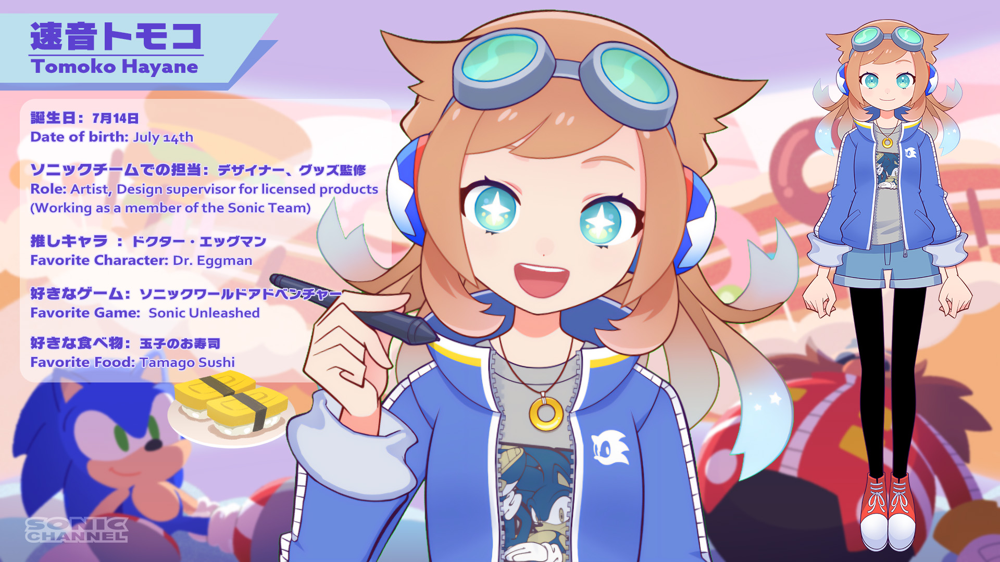

速音トモコです！
みなさんこんにちは！
速音トモコです。
ソニックチームで、デザイナーをやっています。
これから、このコラムでいろいろなお知らせをしていきますので、見てくださいね！
まずは、自己紹介から。
チームでの担当業務は、アート制作やライセンスグッズの監修など。
アート制作では、「異世界大喜利」のイラストなんかも担当しています。
グッズ監修は、ほとんどが海外ライセンシーさんのものになるのですが、面白いものがたくさんありますので、近いうちに、最新グッズを私の目線から紹介出来たらと思っています。
好きなキャラはDr.エッグマンです！
ソニックにエッグマンランド建設を何度妨害されてもめげずにまた次の計画をたてる、軸のブレなさが好きです！
好きなソニックタイトルは「ソニックワールドアドベンチャー」。
高速アクションと、世界観、ストーリー、音楽がとても好きです。
好きな食べ物は、お寿司。
寿司ネタはもちろん「玉子」が一番！（甘い醤油で食べます）
最後に、私の出演する動画をご紹介します。
（お寿司でも食べながら観てください！）
寒いですが、皆さんお体にはお気をつけて！
またお会いしましょう。
速音トモコ
今年から、「ソニックニュース」のキャスターを始めました。1月は『ソニックフロンティア』の体験版をご紹介しています。まだ見ていただいてない方は、こちらからどうぞ！
「音速！おえかき」では、ソニックキャラクター達の描き方をレッスンしています。初心者の方でも描けることを目標にして動画を作っていますので、ぜひ皆さんに挑戦していただきたいです！何度も観て、トレーニングしましょう。きっと上手になりますよ！
私がデビューした動画も紹介しちゃいます！